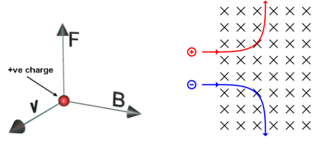
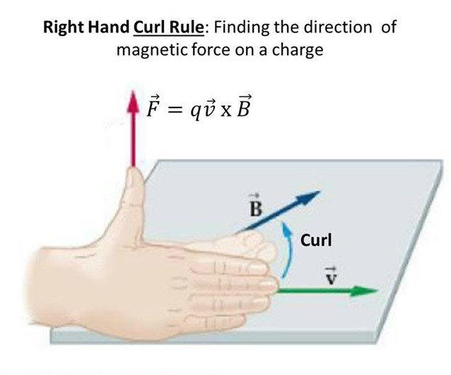
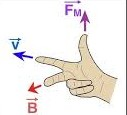
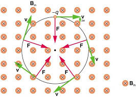
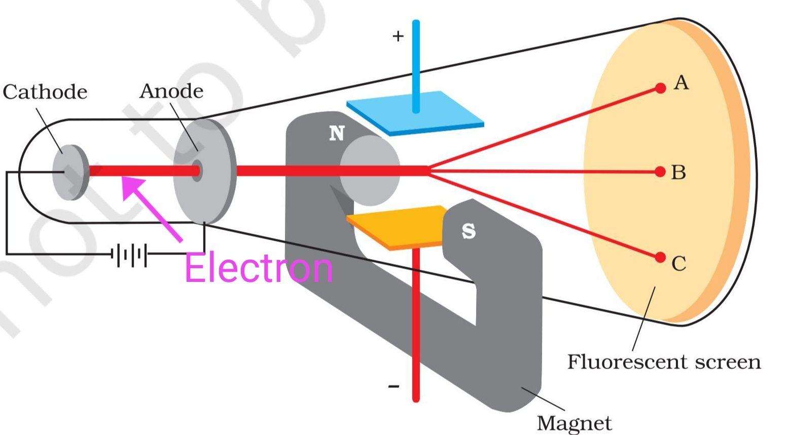

When electric charges move through a magnetic field, they experience a magnetic force. This fundamental interaction is described by the Lorentz force law and has profound implications for particle motion, including circular motion and energy conservation.
The Lorentz Force Law
⚡ Lorentz Force Formula
The magnetic force on a moving charge is given by the Lorentz force law:
This force is perpendicular to both the velocity and magnetic field vectors.
$$\vec{F}_B = q\vec{v} \times \vec{B}$$
Key Characteristics
Magnitude: \(F_B = qvB\sin\theta\) where θ is the angle between velocity and field
Direction: Perpendicular to both velocity and magnetic field (right-hand rule)
Negative Charges: For negative charges, the force direction is opposite to the right-hand rule thumb direction
Dependence: Force depends on charge, velocity, and field strength
No Force: Stationary charges experience no magnetic force

Vector diagram showing magnetic force perpendicular to velocity and magnetic field. (magnetic field is into the page and force is up or down dependent on charge)
Right Hand Rule for Moving Charges
Step 1: Put your hand in the direction of velocity
Step 2: Curl your fingers in the direction of the magnetic field
Step 3: Identify the direction which your thumb points
Step 4: The direction in which your thumb points is the direction of the force on a positive charge. Negative charges are in the opposite direction of your thumb.

Another way you can do it is:

Example: Basic Lorentz Force Calculation
Problem: A proton (q = +1.6 × 10⁻¹⁹ C) moves to the right at 2 × 10⁶ m/s perpendicular to a 0.5 T magnetic field going into the page. Calculate the magnetic force.
Use right-hand rule for positive charge: point fingers to the right (velocity), curl into the page (direction of B), thumb points upwards (force direction).
For negative charges, force direction is opposite to right-hand rule thumb
Force is perpendicular to both velocity and field
Direction depends on relative orientations
Answer
The magnetic force is 1.6 × 10⁻¹³ N, directed perpendicular to both the velocity and magnetic field (upwards for a proton moving to the right with B into the page).
Example: Lorentz Force on an Electron
Problem: An electron (q = -1.6 × 10⁻¹⁹ C) moves to the right at 2 × 10⁶ m/s perpendicular to a 0.4 T magnetic field going into the page. Calculate the magnetic force and its direction.
Use right-hand rule for positive charge: point fingers to the right (velocity), curl into the page (direction of B), thumb points upwards.
But for an electron (negative charge), the force is in the opposite direction: downwards.
The electron will be deflected downward by the magnetic force.
Answer
The magnetic force is 1.28 × 10⁻¹³ N, directed downwards for an electron moving to the right with B into the page.
Circular Motion in Magnetic Fields
🔄 Centripetal Force from Magnetic Field
When a charged particle moves perpendicular to a uniform magnetic field, it follows a circular path.
The magnetic force provides the centripetal force needed for circular motion.
Circular Motion Analysis
Centripetal Force: \(F_c = \frac{mv^2}{r}\)
Magnetic Force: \(F_B = qvB\) (for perpendicular motion)
Equilibrium: \(qvB = \frac{mv^2}{r}\)
Radius: \(r = \frac{mv}{qB}\)
$$r = \frac{mv}{qB}$$

Charged particle moving in circular path due to magnetic force providing centripetal force.
Example: Electron in Magnetic Field
Problem: An electron (m = 9.11 × 10⁻³¹ kg, q = -1.6 × 10⁻¹⁹ C) moves at 3 × 10⁶ m/s perpendicular to a 0.2 T magnetic field. Find the radius of its circular path.
The electron follows a circular path with radius 85.4 μm and period 1.79 × 10⁻¹⁰ s.
Velocity Selector (Wien Filter)
🎯 Velocity Selection with Crossed Fields
When both electric and magnetic fields are present, particles can be selected based on their velocity.
This setup is commonly used in particle physics and mass spectrometry. It is called a velocity selector or Wien filter.
Velocity Selector Setup
Electric Field: Parallel plates create a uniform electric field \(\vec{E}\)
Magnetic Field: Perpendicular to both the electric field and particle velocity \(\vec{B}\)
Forces: Electric force (\(F_E = qE\)) and magnetic force (\(F_B = qvB\)) act in opposite directions
Equilibrium: When forces balance, the particle moves in a straight line
$$F_E = F_B$$
$$qE = qvB$$
$$v = \frac{E}{B}$$

Crossed electric and magnetic fields create a velocity selector. Only particles with velocity \(v = E/B\) pass through undeflected.
If the E field is stronger, the electron will be deflected upwards (since its a negative charge). If the B field is stronger, the electron will be deflected downwards. (use rhr, force goes opposite direction from thumb)
Example: Velocity Selector
Problem: A velocity selector has an electric field of 1000 V/m and a magnetic field of 0.5 T. What velocity particles will pass through undeflected?
Step 1: Identify Given Values
Electric field: E = 1000 V/m
Magnetic field: B = 0.5 T
Step 2: Apply Velocity Selector Formula
\(v = \frac{E}{B}\)
\(v = \frac{1000}{0.5} = 2000\) m/s
Step 3: Interpretation
Particles with \(v = 2000\) m/s pass through undeflected
Faster particles are deflected by the magnetic force
Slower particles are deflected by the electric force
Answer
Only particles with velocity 2000 m/s will pass through the velocity selector undeflected.
Work and Energy in Magnetic Fields
⚡ No Work Done by Magnetic Force
Magnetic forces do no work on charged particles.
This is because the force is always perpendicular to the velocity, so no energy is transferred.
Work-Energy Principle
Work Done: \(W = \vec{F} \cdot \vec{d}\)
Magnetic Force: Always perpendicular to displacement
Result: \(W = 0\) (no work done)
Energy Conservation: Kinetic energy remains constant
$$W = \vec{F}_B \cdot \vec{d} = 0$$
Example: Energy Conservation in Magnetic Field
Problem: A proton moves in a circular path in a magnetic field. Show that its kinetic energy remains constant.
Step 1: Work Done by Magnetic Force
\(W = \vec{F}_B \cdot \vec{d}\)
Since \(\vec{F}_B\) is perpendicular to \(\vec{d}\)
\(W = 0\)
Step 2: Work-Energy Theorem
\(W = \Delta K\)
Since \(W = 0\)
\(\Delta K = 0\)
Step 3: Kinetic Energy
\(K = \frac{1}{2}mv^2\)
Since \(\Delta K = 0\)
Speed remains constant
Answer
The magnetic force does no work, so the proton's kinetic energy and speed remain constant throughout its circular motion.
Practical Applications
🔬 Real-World Applications
Magnetic forces on moving charges have numerous practical applications in modern technology.
These applications range from particle accelerators to medical imaging.
Key Applications
Particle Accelerators: Cyclotrons and synchrotrons use magnetic fields to guide charged particles
Mass Spectrometers: Separate ions by mass-to-charge ratio using magnetic deflection
Magnetic Confinement: Fusion reactors use magnetic fields to contain plasma
CRT Displays: Cathode ray tubes use magnetic fields to deflect electron beams
Medical Imaging: MRI machines use magnetic fields to align nuclear spins
Old tv's use CRT which uses magnetic field to deflect to show pixels. Adding a magnet distorts the screen.
Example: Mass Spectrometer
Problem: In a mass spectrometer, ions with different masses follow different circular paths. Explain how this works.
Step 1: Magnetic Force
Ions enter magnetic field perpendicular to field
Magnetic force provides centripetal force
\(qvB = \frac{mv^2}{r}\)
Step 2: Radius Dependence
\(r = \frac{mv}{qB}\)
For same charge and velocity
Radius is proportional to mass
Step 3: Separation
Heavier ions follow larger radius paths
Lighter ions follow smaller radius paths
Ions are separated by mass
Answer
Ions with different masses follow different circular paths, with heavier ions having larger radii, allowing separation by mass-to-charge ratio.
⚠️ Common Misconceptions
Stationary charges: Experience no magnetic force, only electric force
Work done: Magnetic forces do no work, so kinetic energy is conserved
Direction: Force is perpendicular to both velocity and field, not parallel
Speed: Magnetic forces change direction but not speed of charged particles
Energy: Magnetic fields can't increase or decrease particle energy
Watch this video for Mastery
Key Takeaways
Lorentz Force: \(\vec{F}_B = q\vec{v} \times \vec{B}\) describes magnetic force on moving charges